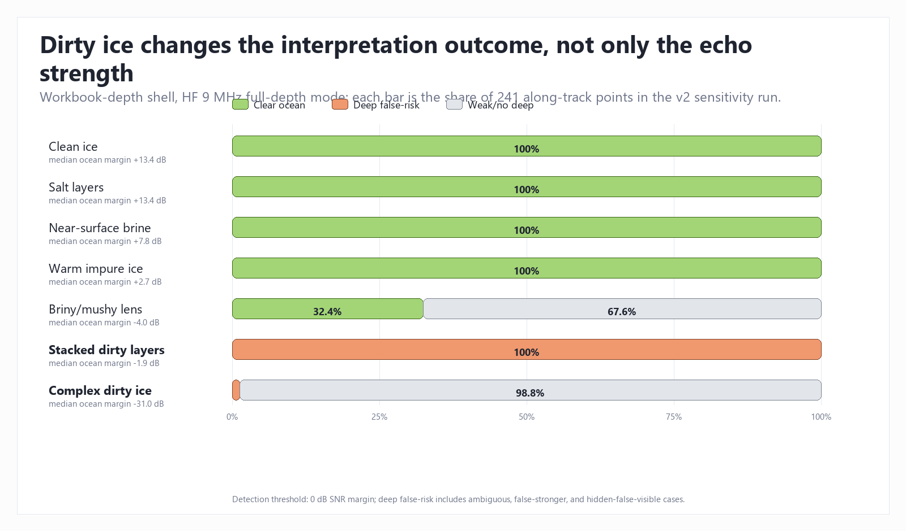
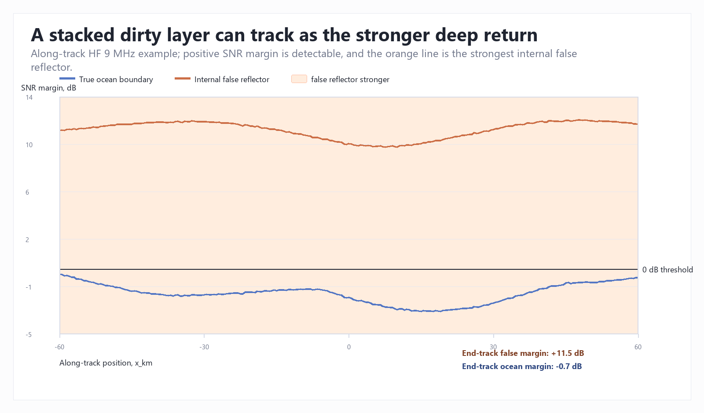
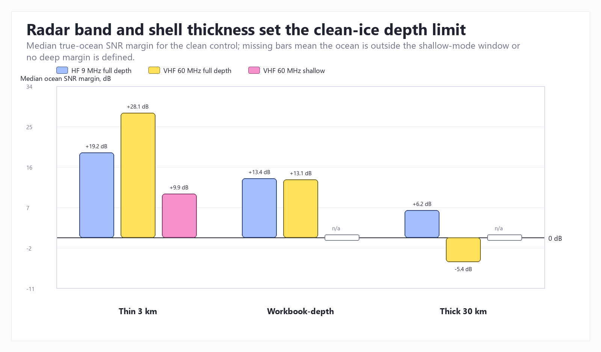
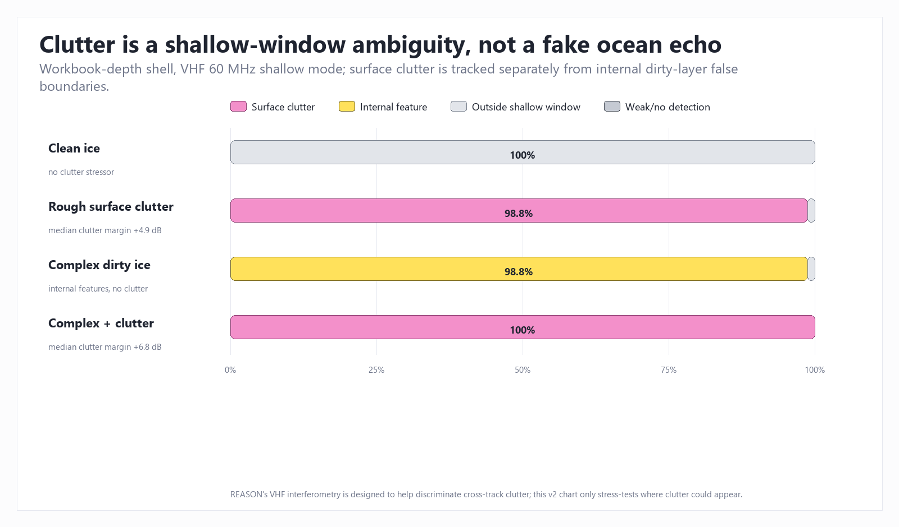
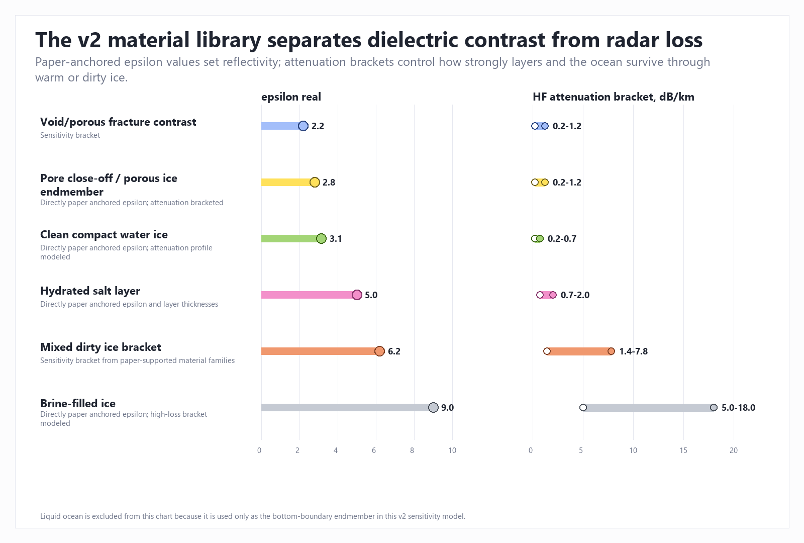
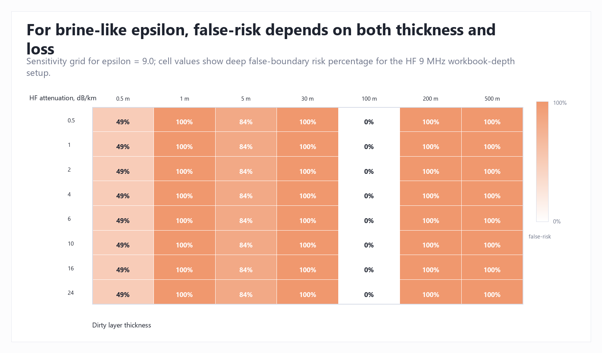
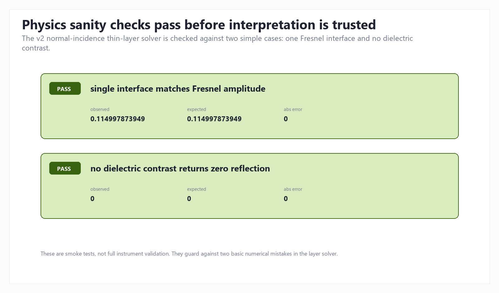

Europa Dirty-Ice Radar Simulation v2
A paper-calibrated sensitivity simulation for testing when Europa radar-bright layers or clutter could mimic, compete with, or hide the echoes used to interpret Europa's ice shell.
Technical Summary
Main result: v2 now separates three radar interpretation problems: attenuation can weaken the true deep return, internal dirty/briny layers can create deep false-boundary risk, and VHF off-nadir clutter can confuse shallow-window returns. This is a sensitivity simulation, not a claim about Europa's actual subsurface.
The clean-ice HF control remains easy to interpret in the workbook-depth shell, with a median true-ocean SNR margin of 13.4 dB. In contrast, the stacked dirty-layer scenario reaches 100% deep false-boundary risk, the complex dirty-ice scenario is dominated by 98.8% weak or no deep detection, and the rough-surface clutter stress test produces 98.8% shallow-window clutter ambiguity in VHF.
Dirty-Ice Outcomes Split Into Clear, False-Risk, And Weak Cases
The headline comparison uses the workbook-depth shell and HF 9 MHz full-depth mode because that is the clearest stress test for bottom-echo interpretation. Clean ice, salt layers, near-surface brine, and warm impure ice can still preserve a clear ocean interpretation under these settings. The stacked dirty-layer case is different: the internal reflector becomes the stronger deep return. The complex case mostly weakens the deep interpretation instead of replacing it with a strong false layer.

The False-Reflector Failure Mode Is Visible Along Track
The stacked dirty-layer example shows why a single bright deep return is not enough to prove that the deepest interface has been identified. The orange internal return remains above the true ocean return across the track, so a simplified strongest-echo interpretation would infer the wrong boundary depth.

REASON Band Choice And Shell Thickness Matter Before Dirty Ice Is Added
The clean-control comparison keeps the material model simple and changes only the shell mode and radar band. It shows why HF 9 MHz is the main deep sounding stress test, while the VHF shallow mode should not be treated as a failed ocean detector when the ocean is outside its shallow depth window.

VHF Clutter Is Now A Separate Stress Test
Clutter is not counted as deep false-ocean risk. In v2 it is a separate shallow-window class that represents off-nadir surface echoes arriving at similar delay to shallow nadir targets. The rough-surface clutter case reaches 98.8% shallow-window clutter ambiguity, and the complex-plus-clutter case reaches 100.0%, while the complex dirty-ice case without clutter is mostly internal-feature interpretation rather than surface clutter.

The Material Library Makes The Simulation More Audit-Friendly
v2 separates mechanisms that were too blurred in the first fake model: dielectric contrast controls reflection strength, attenuation controls how much signal survives through the ice, and clutter is tracked as a separate VHF shallow-window ambiguity. Brine-filled and dirty mixed ice have both stronger dielectric contrast and higher loss brackets, which is why they can create bright internal returns while also hiding deeper returns.

| Material | epsilon real | HF loss min | HF loss max | Status |
|---|---|---|---|---|
| Clean compact water ice | 3.1 | 0.2 | 0.7 | Directly paper anchored epsilon; attenuation profile modeled |
| Pore close-off / porous ice endmember | 2.8 | 0.2 | 1.2 | Directly paper anchored epsilon; attenuation bracketed |
| Brine-filled ice | 9 | 5.0 | 18.0 | Directly paper anchored epsilon; high-loss bracket modeled |
| Hydrated salt layer | 5 | 0.7 | 2.0 | Directly paper anchored epsilon and layer thicknesses |
| Mixed dirty ice bracket | 6.2 | 1.4 | 7.8 | Sensitivity bracket from paper-supported material families |
| Void/porous fracture contrast | 2.2 | 0.2 | 1.2 | Sensitivity bracket |
Attenuation Sensitivity Shows Where The Claim Is Fragile
The brine-like epsilon grid is useful because it makes the model's dependence on thickness and loss visible. When future paper values change the attenuation range, this grid is the first place to update before changing the conclusion.

The Thin-Layer Solver Passes Basic Physics Smoke Tests
The validation checks do not make the model mission-grade, but they do reduce two simple numerical risks: the solver reproduces a single-interface Fresnel amplitude, and it returns zero reflection when there is no dielectric contrast.

Scope, Data, And Metric Definitions
Scope: Synthetic along-track radar sensitivity model, not real Europa subsurface data and not a NASA mission-grade processor. The model tests whether plausible dirty-ice structures can confuse a bottom/ocean interpretation and whether rough-surface clutter can confuse shallow VHF returns.
Primary cohort: Workbook-depth shell, HF 9 MHz full-depth radar mode, 241 along-track points per scenario. Supporting views compare REASON shell modes and VHF 60 MHz behavior.
Clear ocean percent: share of points where the true ocean boundary is the clear strongest deep interpretation. Deep false-boundary risk: share classified as ambiguous, false stronger, or hidden-false-visible under the v2 3 dB ambiguity window. Weak/no deep detection: share where no clear deep ocean interpretation is available. Surface clutter percent: share of VHF shallow points where off-nadir surface clutter is detectable enough to confuse the shallow-window interpretation.
Methodology And Validation
v2 uses REASON-aligned 9 MHz and 60 MHz modes, separate shell-depth modes, a paper-anchored dielectric material library, depth-varying attenuation, a normal-incidence transfer-matrix solver for unresolved thin-layer packets, and a VHF off-nadir clutter stress-test proxy. Echo interpretation is then summarized with a 0 dB SNR detection threshold and a 3 dB ambiguity window.
Compared with the original fake simulation, v2 is better because major knobs are now traceable: radar band, depth window, material epsilon, attenuation bracket, scenario layer count, clutter mechanism, and solver sanity checks. It is still simplified because it does not model full spacecraft geometry, antenna pattern, interferometric phase processing, Europa-specific thermal history, or real REASON processing.
Limitations, Uncertainty, And Robustness
Do not overclaim this result. The current evidence supports "dirty ice can plausibly create ambiguity under these assumptions." It does not prove that Europa has these layers, that REASON will see these exact patterns, or that an ocean echo would be misread in final mission analysis.
- Attenuation in warm or impure ice is the biggest uncertainty and can change the depth at which the ocean becomes hidden.
- The thin-layer interference model is a useful first-order upgrade but should eventually be checked against a fuller radar forward model.
- The clutter model is a stress-test proxy. It flags VHF shallow-window ambiguity but does not simulate REASON's antenna pattern or cross-track interferometric phase retrieval.
- False-boundary risk depends on the 3 dB ambiguity rule, the 0 dB detection threshold, and the layer-depth logic used to decide whether a reflector is a deep confuser.
- Laboratory dielectric values for mixed salts, brines, voids, hydrates, and radiolytic products remain incomplete for all Europa-relevant temperatures and radar frequencies.
Recommended Next Steps
- Add more paper-backed attenuation curves by temperature and impurity type, then rerun the sensitivity grid.
- Separate shallow science reflectors from deep bottom-confusers more explicitly, so bright shallow features do not inflate the ocean-ambiguity claim.
- Upgrade the clutter proxy into a beam-pattern and interferometric-phase model, because REASON is specifically designed to help discriminate cross-track clutter.
- Keep Excel untouched until the Python model stabilizes; then export only the validated scenario summaries and chart-ready tables.
Further Questions
- Which impurity mixtures are most plausible at Europa temperatures for REASON frequencies?
- How sensitive is the false-risk conclusion to layer roughness and non-normal incidence?
- How much of the VHF shallow clutter stress test would REASON's cross-track interferometry reject in practice?
- Should the model promote temperature-dependent conductivity from a sensitivity bracket to an explicit thermal profile?
- What exact threshold should be used for a student project: 0 dB detection, 3 dB ambiguity, or a more conservative margin?
Source Anchors
- NASA Europa Clipper spacecraft instruments - mission instrument context for REASON and the Europa Clipper payload.
- Blankenship et al. 2024, REASON - dual-frequency REASON design, 9 MHz and 60 MHz modes, shell-mode framing, detection threshold, and paper-anchored dielectric assumptions used in v2.
- Lalich et al. 2021 - Mars radar analog showing how bright basal-like reflections can arise from interference between layer boundaries without requiring liquid water.
- Castelletti et al. 2017 and Scanlan et al. 2020 - supporting cross-track clutter discrimination context cited by the REASON paper.
- Pettinelli et al. 2015 review - supporting context for dielectric contrasts in icy planetary materials and analog endmembers.